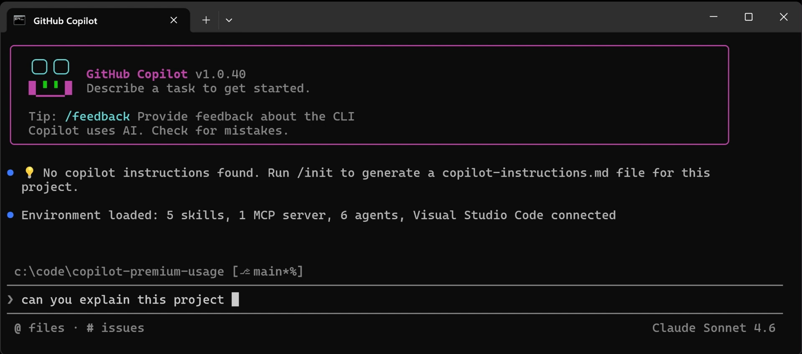

Spin up multiple agents in parallel · long-running tasks run in the background while you keep working

▶ Watch demoShort demo — click to watch
Use Anthropic's official /skill-creator skill — it guides you through the whole process:
"We migrate unit tests from RhinoMocks to Moq. Create a skill with instructions, RIGHT and WRONG pattern examples, and the dotnet test command to verify each file after conversion."
 github.com/anthropics/skills
Agent Profiles Repository — Shared collection of profiles
github.com/anthropics/skills — Official Anthropic skills (review, security-review, skill-creator)
github.com/anthropics/skills
Agent Profiles Repository — Shared collection of profiles
github.com/anthropics/skills — Official Anthropic skills (review, security-review, skill-creator)